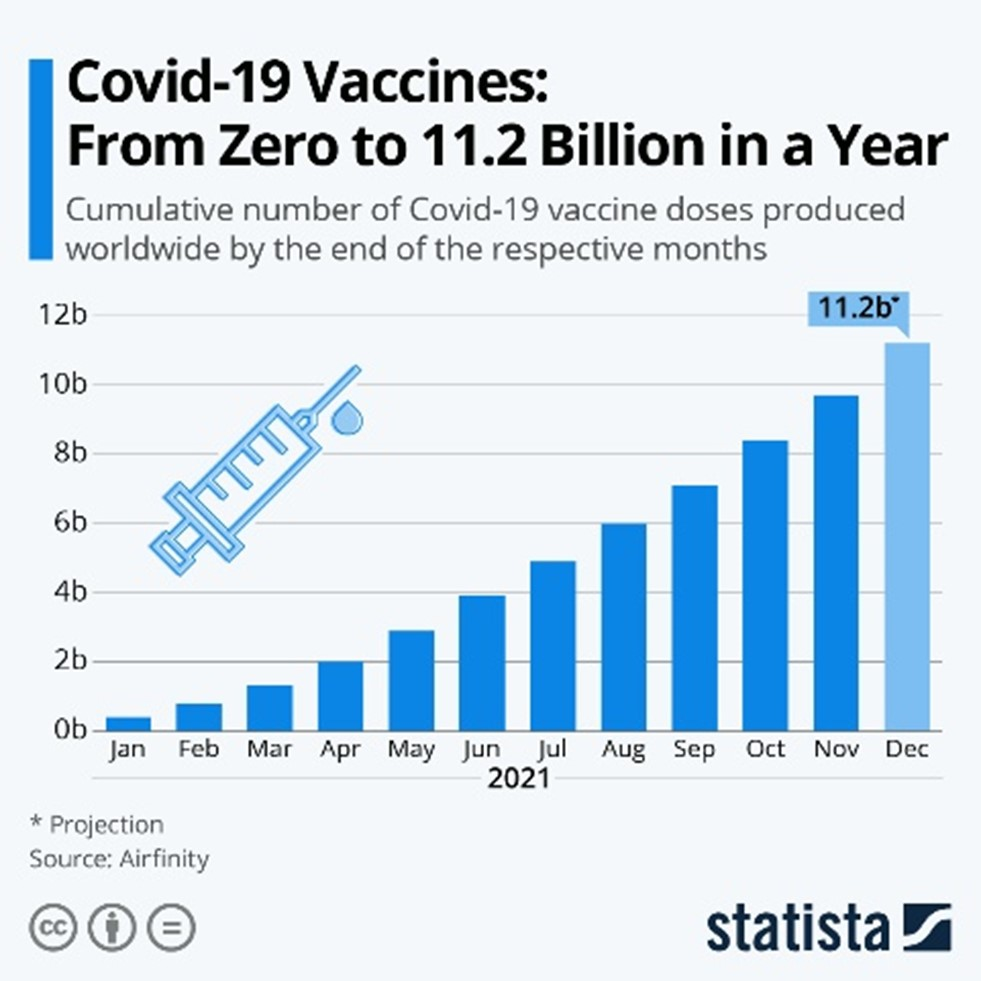
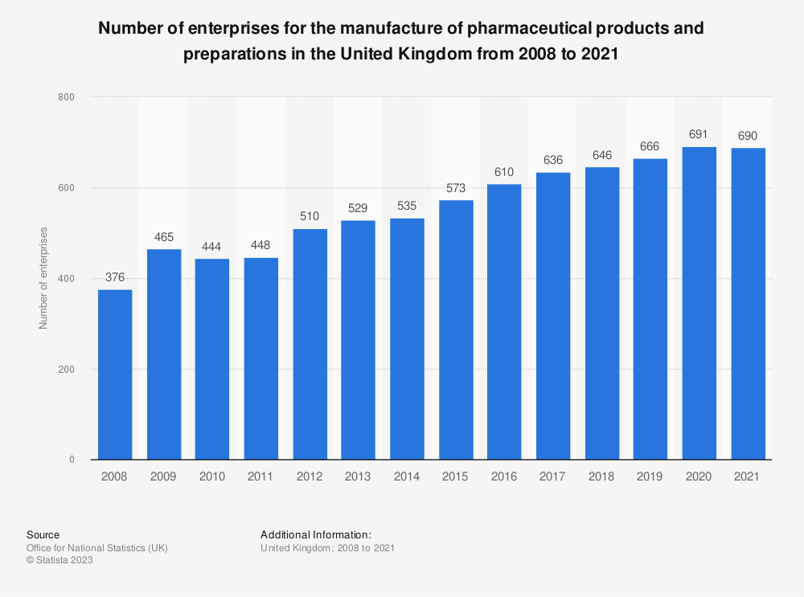
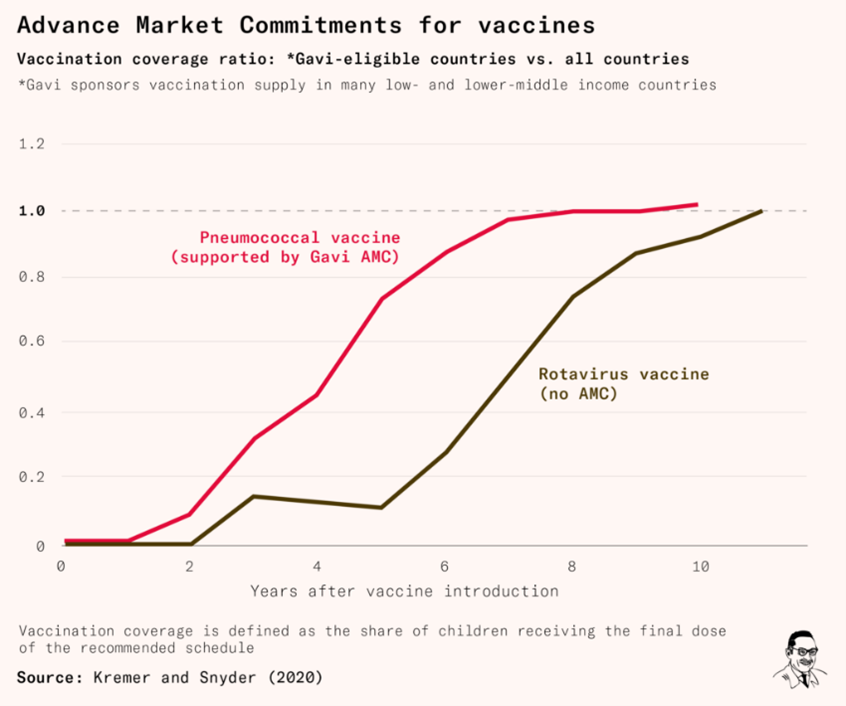

<!DOCTYPE html>

<html></html>

  <head>
     <head>
     
       <h1><b>ENG0018 Computer Laboratory 2023/24</b><h1> 
       <h2>Student URN: 6738836</h2>
    <hr>
    <h2 style="font-family:calibri:"><b>Conference paper: Upscaling of the production of pharmaceutical products on an industrial level</b></h2>
    <hr>
      <!style for tables>
         <style>
        table {
                font-family: arial, sans-serif;
                border-collapse: collapse;
                width: 30%;

                }

                td, th {
                  border: 1px solid #BAC3E5;
                  text-align: left;
                  padding: 8px;
                 }

                 tr:nth-child(even) {
                   background-color: #BAC3E5;
                 }


         </style>

    </head>

  <meta name="viewport" content="width=device-width, initial-scale=1">
  <link rel="stylesheet" href="https://www.w3schools.com/w3css/4/w3.css">
  <style>
  .mySlides {display:none;}
  
  </style>
  
  <!table of contents>
  <table>  

     <tr>
       <th><h3>Table of contents</h3></th>
     </tr>
     <tr>
     <td><a href="#Abstract">Abstract</td>
     </tr>
     <tr>
     <td><a href="#Introduction">Introduction</td>
     </tr>
     <tr>
     <td><a href="#Analysis and discussion">Analysis and discussion</td>
     </tr>

    <tr>
      <td><a href="#References">References</td>
    </tr>
   </table>
     
    </tr>
<body style="background-color:#FFFFFF;margin-left:50px;">
     <h3 id="Abstract">Abstract</h3>
     <p class="ex1">
       <pre>
One of the most crucial points in the pharmaceutical manufacturing industry is the upscaling process so that after clinical trials it can be produced on a large scale and ready for commercialisation,
so that is more readily available to everyone. The upscaling process is carried out by mass production of pharma products and batch processing, which allow for medication, vaccines and other pharma products
to be produced on previously unparalleled scale, all of which allow the products to be more cost-effective and widely available. 
Overall, the upscaling process of pharmaceutical products is a very important and rapidly evolving industry, showing ever increasing innovations in the field leading to greater manufacturing speeds and
shortening the time its takes for the product to be readily available to the public providing lifesaving treatments to so many who need it.
        </pre>

  <body style="background-color:#FFFFFF;margin-left:50px;">
     <h3 id="Introduction">Introduction</h3>
     <p class="ex1">
       <pre>
The upscaling of pharmaceutical production from the laboratory to an industrial level is a pivotal part of the chemical and healthcare industry, that is very important to meeting the ever-increasing demand
for pharmaceutical products used in our everyday lives, it is an industry that is evolving and is rife with innovation, adapting to the constantly changing world of healthcare, providing new and difficult
problem that need solving.
The importance of this process of upscaling cannot be understated as “The seamless scaling up of pharmaceutical manufacturing is essential for ensuring patient safety and maximizing the potential of success 
for a new drug when it goes to market.” How to Scale Up Pharmaceutical Manufacturing (ascendiapharma.com).	Ascendia Pharma
I have highlighted just a few of the details about the process of upscaling pharmaceutical products, over the course of this paper I will delve deeper into the intricacies of this industry, 
showing how the industry has evolved to become more; cost effective, efficient and sustainable giving recent examples.
      </pre>

    <body style="background-color:#FFFFFF;margin-left:50px;">
     <h3 id="Analysis and Discussion">Analaysis and Discussion</h3>
     <p class="ex1">
       <pre>
     <body style="background-color:#FFFFFF;margin-left:50px;">
     <h3 id="Main Article">Main Article</h3>
     <p class="ex1">
       <pre>
The upscaling of the production of pharmaceutical isn’t a simple process that just involves increasing the raw materials and reactants, it’s a complex process that involves; Process development, scale up
parameters (batch size, mixing speed, flow rates and humidity control), all of which may be vastly different from those tested in the laboratory due to many external factors including: 
•	Scale factors – one of the fundamental reasons for differences in the effect of scale, is because in the laboratory you are typically using smaller quantities of raw materials, reactants and equipment. 
  However, when scaled up to industrial level many factors such as heat transfer and kinetics can cause these reactions to act differently.
•	Equipment differences - When using equipment in the laboratory it is often used for experimentation, however on an industrial level, the main aim is large scale production designed for efficiency.
It is often stated that; ‘the most critical points in the production of pharmaceutical products is mass production, the upscaling of the manufacturing process so a drug can be produced on a larger scale for
commercialization and clinical trials. ‘ How to Scale Up Pharmaceutical Manufacturing (ascendiapharma.com).	 Ascendia Pharma. This statement encapsulates the importance of pharmaceutical mass production,
This is no more evident than in the recent example of the Covid-19 pandemic in which the vaccine, went from clinical trials and being safely approved to mass produced on a unrivalled scale, with the current
number of vaccines that had been produced being close to 14 billion, with ’11.2 Billion being produced in a year’,(see figure 1) Felix Richter (2021) ‘Covid-19 vaccine from zero to 11.2 billion in a year’ .

Felix Richter (2021) ‘Covid-19 vaccine from zero to 11.2 billion in a year’
       </pre>
 <h3 id="Challenges that can be encountered ">Challenges that can be encountered </h3>
     <p class="ex1">
        <pre>
There are a lot of challenges being faced when it comes to mass production, that can lead to delays and prolonging the release of the product to the wider public, which can lead to problems in its own way.
Some examples of the difficulties that can plagues the upscaling process are:
•	Incorrect Scale factors - Incorrect scale factors when upscaling can lead to wrong doses and proportion of product being made, without the correct chemical balance the product could be  ineffective.
  Additionally in the scaling up process it may require adjustments to the equipment and regulatory compliances.
•	Maintaining consistent quality and efficiency – It can often be difficult to ensure larger batches of product have the same consistency and efficiency as the smaller batches.
•	Contamination – One of the biggest problems with the upscaling process is the possibility of contamination. As it leads to the whole batch being unusable and having to be disposed of, leading to waste.
  One way this can be prevented is ‘To minimise contamination risk, the entire pharmaceutical processing system must be closed. Single and multiple-use containment systems keep powdered materials contained
  inside a specially formulated film. This way, the product is significantly less likely to meet foreign contaminants.’ Pharmaceutical Technology (2019) ‘The challenges of scaling up pharmaceutical manufacturing’.
        </pre>
<h3 id="The Future of Pharmaceutical mass production: ">The Future of Pharmaceutical mass production </h3>
     <p class="ex1">
        <pre>
The Pharmaceutical industry is rapidly evolving, witnessing waves of changes of the last couple of decades, some of these improvements include being able to mass produce vaccine in continents where this was
previously unattainable, where because of socio economic, working and climate factors it makes it hard. Other improvements include shortening the period between clinical trials and being approved for mass 
production, and the improvement of drug delivery systems allowing more people to have access to these lifesaving treatments; “The success of a pharmaceutical drug delivery system depends on its manufacturing
feasibility in the controlled environment of good manufacturing practices at larger scales while preserving the physicochemical properties during the scale-up process.”, Nazende Günday Türeli, Akif Emre Türeli
(2020), Drug delivery trends: Upscaling and GMP production of pharmaceutical drug delivery systems.                

Figure 2 (Shows the number of enterprises and companies that manufacture pharmaceutical products over 13-year period) Office for National Statistics (UK). (2023). Number of enterprises for the manufacture of pharmaceutical products and preparations in the United Kingdom from 2008 to 2021.  
There is also growing interest in changing the process of production; “There is growing interest in moving away from traditional batch processing to continuous API manufacturing, as a result of the development of flow chemistry.”Luis, S. V. (2020) Flow chemistry : integrated approaches for practical applications. S. V. (Santíago V.) Luis & E. (Eduardo) García-Verdugo 
       </pre>
<h3 id="Conclusion ">Conclusion </h3>
       <pre>
The upscaling the process of pharmaceutical products manufacturing is a rapidly evolving industry that changes every year with more innovations making it more efficient and streamlining the process, however
despite all this there are still continuous errors and challenges that always need to be overcome in the upscaling process, however with the hard work of process/chemical engineers and the pharmaceutical industry,
we are rapidly approaching a future where everyone has access to these products, providing urgent and lifesaving treatment. 

Figure 3 (Showing the vaccination coverage ratio received by children over time)
Saloni Dattani ,Rachel Glennerster ,Siddhartha Haria (2023), Why we didn't get a malaria vaccine sooner
       </pre>
<h3 id="References">References</h3>
<p>
<pre>
How to Scale Up Pharmaceutical Manufacturing (ascendiapharma.com). (2022)	Ascendia Pharma 
Felix Richter (2021) ‘Covid-19 vaccine from zero to 11.2 billion in a year’ 
Pharmaceutical Technology (2019) ‘The challenges of scaling up pharmaceutical manufacturing’
Nazende Günday Türeli, Akif Emre Türeli (2020), Drug delivery trends: Upscaling and GMP production of pharmaceutical drug delivery systems
Office for National Statistics (UK). (2023). Number of enterprises for the manufacture of pharmaceutical products and preparations in the United Kingdom from 2008 to 2021. 
Luis, S. V. (2020) Flow chemistry : integrated approaches for practical applications. S. V. (Santíago V.) Luis & E. (Eduardo) García-Verdugo (eds.). London, England: Royal Society of Chemistry
</pre>
    </p>
</pre>
<p id="date&time"></p>
<script>
  //Javascript to display the data and time on my webpage

  const d = new Date();
  document.getElementByld("date&time").innerHTML=d;
</script>
<h2>Conference paper: Upscaling of the production of pharmaceutical products on an industrial level</h2>
<script>
  // Array of slide image URLs
  var slideImages = ["slide1.jpg", "slide2.jpg","slide3.jpg","slide4.jpg","slide5.jpg"];
  var currentSlide = 0;
  function showSlide() {
    document.getElementById("slideshow").src = slideImages[currentSlide];
  }
  function nextSlide() {
  currentSlide = (currentSlide + 1) % slideImages.length;
    showSlide();
  }
  function prevSlide() {
    currentSlide = (currentSlide - 1 + slideImages.length) % slideImages.length;
    showSlide();
  }
    // Call showSlide() to display the first slide
    showSlide();
</script>
<div id="slide-container">
  
  <!-- Previous and Next buttons container -->
  <div class="button-container">
    <button class="button" onclick="prevSlide()">Previous</button>
    <button class="button" onclick="nextSlide()">Next</button>
  </div>


  
  <div class="slide-number-container">
    <button class="button" onclick="showSlideNumber(1)">1</button>
    <button class="button" onclick="showSlideNumber(2)">2</button>
    <button class="button" onclick="showSlideNumber(3)">3</button>
    <button class="button" onclick="showSlideNumber(4)">4</button>
    <button class="button" onclick="showSlideNumber(5)">5</button>
  </div>
</div>
  <style>
 
  #slide-container {
    text-allign: center;
    position: relative
  }
 /* Style for the buttons */
 .button-container {
   position: absolute;
   bottom: 0;
   left: 50%;
   transform: translateX(-50%)
   margin-bottom: -100px;
 }
.button {
  padding: 10px 20px;
  background-color: #4CAF50;
  color: white;
  border: none;
  border-radius: 5px;
  font-size: 16px;
  cursor: pointer;
  margin: 0 5px;
}

  .slide-number-container {
  position: absolute;
  bottom: 0;
  left: 50%;
  transform: translateX(-50%);
  margin-bottom: -50px;
 }
</style>  
  
